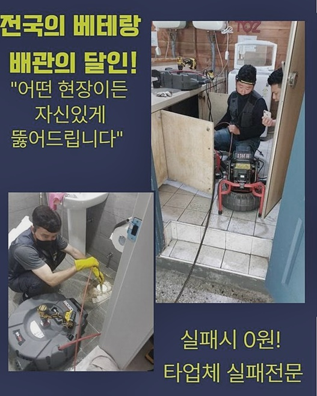
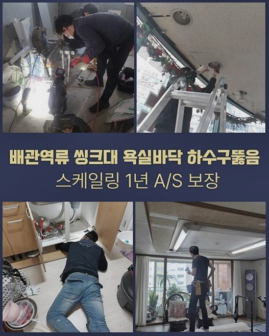
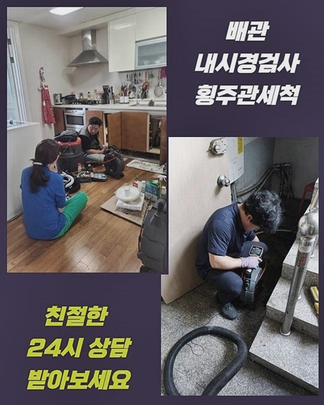
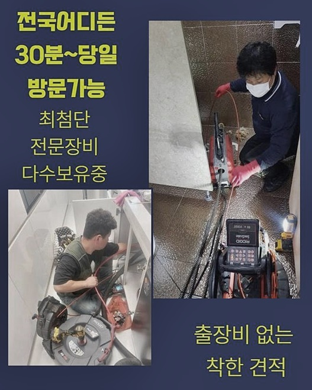
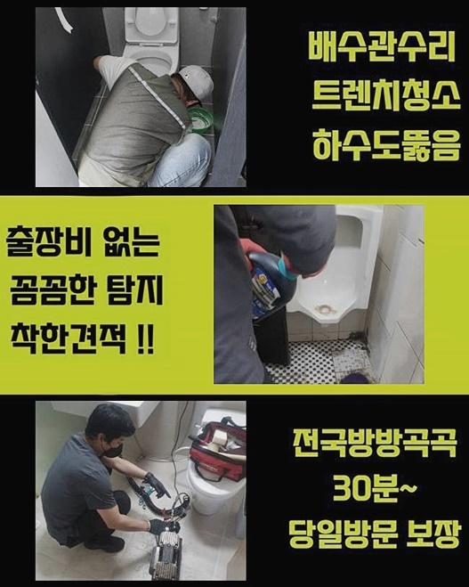
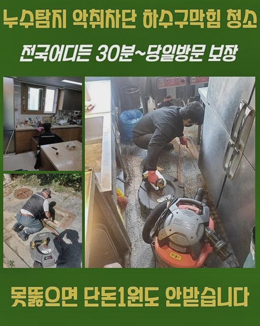

🏠 포천 가산면세탁실막힘 신북면 배수구뚫기 수리업체
용인 싱크대막힘 전문 시공 후기

📋 작업 개요
- 위치: 용인
- 서비스 유형: 싱크대막힘, 배관막힘, 뚫는업체, 설비공사
- 작업 일시: 2024. 7. 13. 14:54
- 업체명: 하수구수사대 (010-5615-2118)
🔍 문제 상황
포천 가산면세탁실막힘 신북면 배수구뚫기 수리업체
저희들은 손님분께서 바라시는 타임에 적절하게 출장해 드리고 있고 속히 대처하고 있답니다
저녁 10시 이후나 주말이라고 하여도 즉각적으로 출발하여 수선해 드리죠
고객님의 요청사항에 민첩하게 응접해서 만족도 높은 뚫음 시공을 이행하는 게 저희 기본방침입니다
빠른 안내와 공사로 속시원한 성과를 느끼실 수 있게끔 노력을 다합니다
점검단계에선 근본적 동기를 판단하는데 업무량이 상당부분 소비되었으나 건물의 하부에 설비된 배수파이프가 범인이었다는 사실을 파악한 다음 해결방안을 세우게 되었죠
결론적으로 상가 이용자들의 고통을 감소시키고 이용객들이 일상적으로 사용하시게끔 도움을 드렸어요
이런 사태는 여러 동기들로 말미암아 촉발될 수 있으므로 조속한 처치가 요망됩니다
저희팀은 언제나 의뢰자의 고민에 즉각 응접해서 만족도 높은 작업을 시행해 드릴게요
상가 내에서 일어난 트러블은 올해초부터 이어져 온걸로 알게 되었답니다
이것으로 부근의 상가들에게도 손실을 주었는데 유난히 화장실 사용이 힘들었다고 말씀하셨어요
이 부분은 상가 전체 유지에 무거운 피해를 주었기 때문에 재빠른 대응이 불가결했어요
갑작스레 발현되는 배수고장은 구조물의 형태나 나이 그것에 더하여 급격한 온도변화 등 여러 동기들로 발발하게 되는데요

🔎 원인 분석
💡 전문가 진단: 정밀 진단 장비를 사용하여 슬러지의 고착 여부를 판명하고 타격/세척 작업을 실시했습니다.
이렇기에 근본을 간파하기 위해선 다채로운 가망성을 헤아릴 수 있어야 해요
일반적인 주택에서 난도가 높은 시공을 처치해 낸 것을 비롯하여 항시 기술 점검과 스터디를 진행하여서 최상위 수준이 될 수 있었습니다
우리들은 고성능의 내시경cctv와 흡입기기를 포함해 물이 유출되는 지점을 파악하게 만들어주는 여러 기기들을 갖고 있으므로 타 지점과의 비교에서 상위 수준이라 평가받게 된 것이죠
이러한 최첨단 공구들을 근간으로 정밀한 관찰과 문제되는 물질을 없애는 시공을 하고 있습니다
저희들은 잽싸게 트러블의 연유를 건조물 하단에 설치된 배수파이프에서 알아냈습니다
이 부위는 주변부의 상황때문에 용이하게 볼 수 있는 위치가 아니었으나 주된 원인이 되었던 장소였습니다
바로 합당한 기계를 이용하여 고장을 조속하게 처치할 수 있던건데요
보통 건물들을 포함하여 일반 주택에 이르기까지 여러종류의 처소에서 일어나는 장애이므로 기술적인 대처가 필수적이죠
만일 하수관고장이 난해한 상태로 진행되었을 때에 전문적인 진단이 요망되고 자체적으로 해결하려고 든다면 더더욱 문제상황만 악화될 것입니다
그러니 여러가지 곤란을 경험할 필요없이 기술자에게 의뢰하는 게 좋다고 봐야합니다
공구가 파이프에 끼이게 될 가망이 높았기에 얇은 스프링 분쇄기를 써서 강하게 가동시켜서 슬러지를 소멸시켰고 계속적으로 속행해서 결과물을 정결하게 변모시켰어요
욕실 배관과 주방시설에 연계된 하수관에 적층된 침전물을 소멸시키고 고압세정으로 청결한 마무리가 가능했습니다
이로서 물막힘없는 편안한 생활을 확보할 수가 있었어요
식당이나 일반 아파트의 배관정체를 처치하기 위해선 우선 생겨나게 된 까닭을 간파해내야 하죠

🔧 작업 과정
이물들을 조속히 처치 후 내시경카메라를 넣어 배수관 안쪽을 보고 어떠한 막힘이 벌어진 것인지 알아봅니다
쉽게 윗부위만 없애는 것에서 그치는 게 아니고 근본적인 문제점을 그냥 놔두게 된다면 일시적으로 해결될 수는 있겠지만 재차 정체가 가중될 수도 있습니다
그렇기에 우리팀은 근원 지점을 발견하지 못하면 금액 청구를 하지 않는단 준칙을 세워두고 있죠
이러한 저희의 운영방침으로 인해 흡족함을 선사하고 있죠
저희들은 제일 상단부 침전물부터 없애나가기로 했죠
이것들과 관련해 의뢰자께도 설명했고 막힘이 갑작스럽게 발생되었다고 푸념하셨답니다
비전문인의 입장에서는 까닭을 알아내기 힘겨우나 저흰 여러 변수 속에서 숙련성이 많은 기술인으로 구성돼 있으므로 어떠한 말썽이라도 수리해 냅니다
우리들은 다양한 경험으로 무장한 전문인으로 결성돼 있고 이번에 방문하였던 담당자도 책임감 넘치는 기능공이셨습니다
이런 상황을 갖추고 수리하므로 힘겨운 고장도 타개할 수 있답니다
카메라 설비를 집어넣어 하수관 안을 들여다보니 다량의 찌꺼기가 누적된 걸 파악할 수 있었어요
이를 기타 배수관과 관련된 것은 아닐지 검수하는 편이 옳겠다고 마음 먹고 싱크대까지 펼쳐진 관로를 점검하기로 결단내렸어요
의심되는 관로를 분해해서 안쪽 구석구석을 내시경cctv를 이용 알아보니 싱크대와 통하고 있다는 사실을 알게 되었어요
이를 통해 벌어진 동기를 파악하고 조치를 강구할 수가 있었답니다
보는 것처럼 면밀한 확인과 빠른 시공이 뚫음을 시행하는 것에 커다란 일을 맡는다는 것을 알 수 있었습니다
다음날 오전에는 다른 의뢰인이 물이 안내려가는 문제로 바로 점검을 요청했는데요
전문가는 조속하게 그쪽으로 가서 빠르게 작업을 끝맺으려 요망되는 기기들을 꼼꼼하게 갖추었답니다
막힘의 수준을 알아내기 위해서 소량의 액상을 주입하였더니 굼뜨게 없어지는 것을 관찰하였답니다
이건 관로에 정체가 일어났음을 알리는 증거였죠
다수가 사용하면 심각해지는 사태를 만날 수 있어요
이에 대응하여 우리들은 적합한 도구들을 응용하여 훼손된 배수관을 능률적으로 처리했어요
배관에 일어난 고장은 기술인의 점검과 적시의 해결이 요망됩니다


✅ 작업 완료
시공 과정에서는 가늘고 긴 배수관 안을 검사해야 해서 요청되는 도구 일체를 두루 사용하여 경제적으로 수리를 시행하였어요
바깥쪽으로 이어지는 배수관까지 부드럽게 물빠짐이 지속되게 열성적으로 수선하고 있죠
예측과 다르게 발발할 수 있는 변인에도 빠르게 대처하여 퀄리티있는 결과물을 만들려 매진하고 있습니다
미미한 증상이라고 하찮게 여기고 내던지시는 손님분들이 가끔가다 보이는데요
그건 한층 심각한 손해를 유발하게 하는 이유로 작용할 수 있기 때문에 이상을 감지하셨다면 얼른 의뢰를 하는 것이 좋습니다
손님께서 후회하지 않는 성과를 만나시게끔 진중하게 노력하겠습니다



⚠️ 주방 싱크대 배관 막힘 예방 수칙
- ✅ 기름기가 묻은 식기나 프라이팬은 설거지 전 키친타올로 반드시 기름때를 닦아내세요.
- ✅ 주기적으로 싱크대 개수대에 뜨거운 물을 가득 받아 한 번에 내려 배관 내부 기름을 씻어내세요.
- ✅ 배수구 거름망을 미세한 필터로 사용하시고 음식물 찌꺼기가 틈으로 새어 들지 않게 관리하세요.
- ✅ 베이킹소다와 식초를 뜨거운 물과 함께 일주일에 한 번씩 부어주면 배관 살균과 막힘 예방에 좋습니다.
💡 핵심 정리
- 확실한 장비 작업(내시경 점검 및 샤프트 스케일링)으로 원인을 뿌리 뽑습니다.
- 작업 후 1년 이내에 동일한 부위 재발 시 100% 무상 A/S 서비스를 보장합니다.
- 서울 · 경기 · 인천 전 지역에 24시간 언제든 긴급 출동할 수 있도록 항시 대기 중입니다.
❓ 자주 묻는 질문 (FAQ)
🚨 용인 싱크대막힘 문제로 고민이신가요?
정확한 원인 진단과 확실한 시공으로 재발 없는 해결을 약속드립니다.
24시간 긴급 출동 | 서울 · 경기 · 인천 전지역 | 1년 내 재발 시 무상 A/S